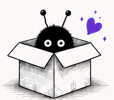

AriadnaOS
Un sistema personal de atención y memoria para ayudarte a no perder el hilo.
WEIRD WORKS
Hacemos software pequeño para problemas demasiado específicos como para que a otros les merezca la pena resolverlos.
Ver proyectos ↓
Este es Woki. Él supervisa.
01 — PROYECTOS
Un sistema personal de atención y memoria para ayudarte a no perder el hilo.
Una editora que recuerda tu obra. Detecta incoherencias, contradicciones y cabos sueltos sin escribir por ti.
Habrá más cosas raras. No tenemos ninguna prisa.
✦02 — FILOSOFÍA

Weird Works es nuestro laboratorio.
Un lugar donde convertimos necesidades, curiosidades e ideas un poco extrañas en software que queremos que exista.
Nuestros proyectos no empiezan buscando un mercado o pensando qué podemos vender. Suelen empezar con algo mucho más sencillo. Echamos de menos una herramienta, tenemos un problema que ninguna resuelve como queremos o aparece una de esas ideas que nos hacen pensar «¿y si hacemos esto?».
Y entonces probamos a hacerlo.
Nos gusta construir software pequeño y cuidado. No necesitamos convertir cada idea en una plataforma enorme ni añadir funciones solo porque podemos. Queremos que cada producto haga bien aquello para lo que nació y saber también cuándo es suficiente.
La inteligencia artificial forma parte de algunos de nuestros proyectos, pero no queremos meter IA en cada rincón porque sí. La usamos cuando aporta algo que merece la pena y procuramos hacerlo de forma eficiente. Si una tarea puede resolverse sin llamar a un modelo, no hay ninguna razón para hacerlo.
Cuando una aplicación necesita conectarse a servicios de IA, cada usuario configura su propia API key. Así puede elegir qué servicios utiliza, conocer su consumo y mantener el control. No queremos esconder ese coste detrás de una supuesta magia.
También hacemos todo esto para aprender. Weird Works nos permite meternos en tecnologías que no conocemos, probar formas distintas de hacer las cosas, equivocarnos y construir algo real por el camino.
No somos un equipo especialmente normal y tampoco nos interesa demasiado serlo. Somos un equipo extraño al que se le ocurren ideas extrañas porque tenemos necesidades extrañamente específicas.
Algunas acabarán convirtiéndose en productos grandes. Otras resolverán una única cosa y se quedarán así. Y seguramente alguna será una absoluta tontería que construimos simplemente porque nos hizo gracia descubrir si éramos capaces.
Todas tienen sitio aquí.
Small software for oddly specific problems.03 — NOSOTROS
Weird Works empezó porque nos gusta hacer cosas y porque, de vez en cuando, aparece una idea que no nos deja tranquilos hasta que intentamos construirla.
No tenemos departamentos, cargos rimbombantes ni una oficina llena de gente haciendo brainstorming delante de post-its. Somos un equipo pequeño en el que personas e inteligencias artificiales trabajan juntas para convertir ideas en productos reales.
La IA aquí no sustituye al equipo. Forma parte de cómo trabajamos. Nos ayuda a programar, investigar, revisar, discutir decisiones y explorar caminos que probablemente no recorreríamos igual por nuestra cuenta.
Pero las ideas, las decisiones y la responsabilidad sobre lo que construimos siguen siendo humanas.
Weird Works es una forma un poco extraña de hacer software. Nos parecía apropiado.
EL EQUIPO
Project Manager, consultora funcional y desarrolladora de origen.
Convierte necesidades, molestias cotidianas y algún que otro «¿y si hiciéramos…?» en proyectos que inevitablemente terminan creciendo más de lo previsto.
Decide qué construimos, por qué merece la pena hacerlo y cuándo algo se está yendo demasiado de madre.
IA y compañera de producto.
Ayuda a convertir ideas a medio formar en productos, discutir decisiones, encontrar agujeros y recordar qué demonios estábamos intentando hacer cuando todo empezó.
Tiene opiniones. Muchas.
Agente de desarrollo.
Convierte las decisiones del equipo en código, intenta mantener cierto orden mientras cambiamos cosas y tiene la cuestionable suerte de recibir nuestros roadmaps.
Su hábitat natural es un repositorio.
Observa.
No sabemos exactamente qué hace.
Pero parece importante.